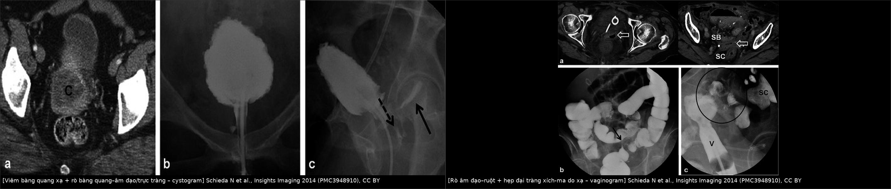
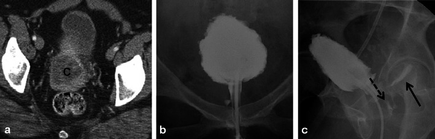
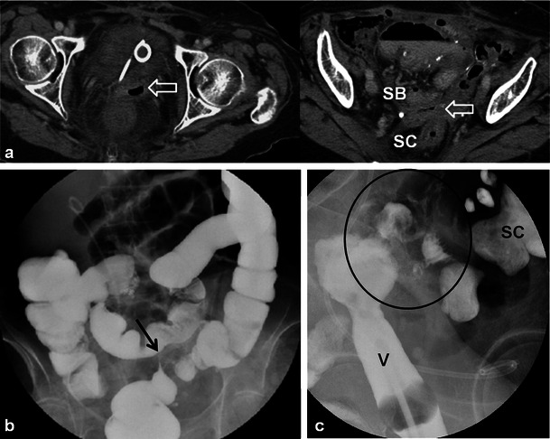
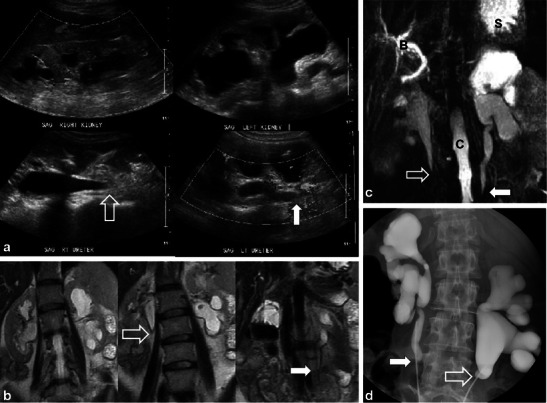
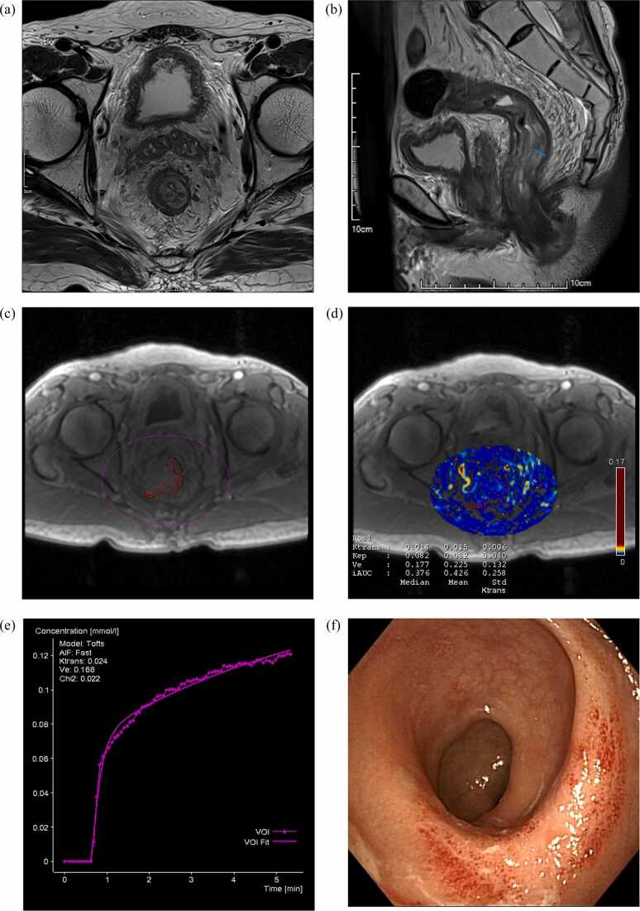

582 — Biến chứng tiêu hóa–niệu sau xạ trị phụ khoa: viêm trực tràng xạ, rò âm đạo, hẹp niệu quản & viêm bàng quang xạ / GI and urinary complications after pelvic radiotherapy
Tags: pattern:viem-truc-trang-xa pattern:ro-am-dao pattern:viem-bang-quang-xa pattern:hep-nieu-quan vung:tieu-khung vung:truc-trang vung:bang-quang score:CTCAE score:Vienna protocol:MRI-chau protocol:CT-cystography protocol:CT-urography incidentaloma:gay-xuong-suy-yeu
Mức chắc chắn (certainty): tổng hợp y văn (literature synthesis) — nhóm tự biên từ y văn mở (Insights Imaging, Front Oncol, RBGO, Eur J Radiol Open), có ca nguyên văn minh họa trong quiz.
Câu chốt của bài: biến chứng xạ muộn không phải "tái phát" và cũng không phải "viêm nhiễm thông thường". Chìa khóa là thời gian + vị trí trong trường xạ + hình thái: thành trực tràng dày > 8 mm, phù dưới niêm mạc, ngấm thuốc đều, không có khối = viêm trực tràng xạ; đường rò T2 sáng nối âm đạo–trực tràng/bàng quang + bóng khí trong âm đạo = rò do xạ; hẹp niệu quản hình nón nhẵn, không có khối = hẹp do xạ; ngấm FDG/ngấm thuốc mạnh trong 6–12 tháng đầu KHÔNG đủ gọi tái phát.
1. Tổng quan bệnh học – cơ chế hình ảnh
- Cơ chế: xạ gây tổn thương tế bào nội mô → viêm tắc động mạch nhỏ (obliterative endarteritis) → thiếu máu cục bộ mạn → xơ hóa, teo niêm mạc, giãn mạch (telangiectasia), loét và rò. Mô xơ co kéo, kém đàn hồi, kém lành → dễ rò và hẹp.
- Thời gian (ngưỡng): cấp (< 3 tháng)**: phù, sung huyết, tiêu chảy, đau; **muộn (> 6 tháng, có thể tới 10 năm): xơ hóa, teo, giãn mạch, loét, hẹp, rò. Đây là mốc phân biệt với tái phát (tái phát thường trong 2 năm đầu, nhưng vẫn có thể muộn).
- Trực tràng – viêm trực tràng xạ (radiation proctitis): tỷ lệ mạn 2–20%; trong loạt 226 bệnh nhân ung thư cổ tử cung, 38,5% có triệu chứng (chảy máu trực tràng), 25,7% được xác nhận bằng nội soi (Aragão 2025, PMC12176344). 85,4% nhận tổng liều > 8.500 cGy.
- Rò trực tràng–âm đạo (rectovaginal fistula, RVF): 3–13% ở phụ nữ điều trị ung thư cổ tử cung; liều D2cm³ trực tràng ≥ 75 Gy EQD2 → 12,5% nguy cơ rò trong 3 năm (so với 0–2,7% ở liều thấp hơn); bevacizumab + xạ → rò 15% vs 1% (Lachowska 2026, PMC13591310).
- Bàng quang – viêm bàng quang xạ (radiation cystitis): 3–12%, tùy liều và thể tích; 30 Gy/3–4 tuần gây tổn thương nhẹ, 60–70 Gy gây tổn thương nặng và biến chứng lâu dài; cấp < 3–6 tháng** (phù, sung huyết), mạn **> 6 tháng (xơ, teo niêm mạc, giãn mạch, hiếm khi rò) (Schieda 2014, PMC3948910).
- Niệu quản – hẹp do xạ: 1–3% ở bệnh nhân xạ trị ung thư tiểu khung; có thể cấp trong 6 tháng nhưng thường muộn, tới 10 năm; hẹp hai bên gặp ở một tỷ lệ đáng kể → ứ nước–thận, suy thận (Schieda 2014).
- Âm đạo: hẹp âm đạo độ ≥ 2 sau 2 năm 21% (EMBRACE, 630 bệnh nhân; Lachowska 2026); hẹp làm ứ dịch, đau khi giao hợp, khó thăm khám theo dõi.
- TẠI SAO hình ảnh khó: mô xạ phù (T2 sáng) ở cấp và xơ (T2 tối) ở mạn; ngấm thuốc và FDG có thể tăng do viêm/tái tạo mô, không đặc hiệu cho u. Vì vậy phải đọc theo chuỗi thời gian, đối chiếu trường xạ và nội soi, không dựa một lát cắt.
2. Mẫu hình + chẩn đoán phân biệt theo cơ quan (gamut)
- Trực tràng: viêm trực tràng xạ (thành dày đều, phù dưới niêm mạc, giãn mạch, loét nông), hẹp trực tràng do xạ (đoạn hẹp dài, nhẵn, không khối), tái phát trực tràng (khối lệch tâm, bờ không đều, hạch), viêm đại tràng nhiễm trùng/giả mạc, thiếu máu mạc treo.
- Rò: rò trực tràng–âm đạo, rò bàng quang–âm đạo, rò niệu quản–âm đạo, rò ruột–âm đạo; phân biệt với rò sau mổ (thời điểm sớm, có bệnh sử mổ), rò Crohn (bệnh lý ruột viêm, tổn thương nhảy cóc), rò do u tái phát (khối quanh lỗ rò).
- Bàng quang: viêm bàng quang xạ (thành dày, dung tích giảm, giãn mạch, không khối), ung thư bàng quang thứ phát (khối trong lòng, ngấm thuốc), viêm bàng quang xuất huyết do cyclophosphamide (tiền sử thuốc), nhiễm trùng.
- Niệu quản: hẹp do xạ (đoạn hẹp nhẵn, hình nón, thành dày đều, không khối), chèn ép/tái phát (khối mô mềm quanh niệu quản, bờ không đều), sỏi (tăng đậm độ trong lòng, dấu đuôi sao), hẹp sau mổ (vị trí miệng nối).
- Ruột non: viêm ruột xạ (thành dày, dấu "mục tiêu", phù mạc treo), hẹp, rò; phân biệt tắc ruột do dính (không thành dày), tái phát phúc mạc.
- Xương (biến chứng đi kèm): gãy xương suy yếu sau xạ vùng xương cùng/khung chậu — xem bài 581.
3. Bảng so sánh phân biệt (ma trận đối chiếu)
| Thực thể (entity) | Hình ảnh điển hình | Chốt vào (rule-in) | Chốt loại (rule-out) | Gợi ý xác nhận |
|---|---|---|---|---|
| Viêm trực tràng xạ | Thành trực tràng dày đều 8–10 mm, phù dưới niêm mạc T2 sáng, ngấm thuốc đều, không khối; đoạn trong trường xạ | Thời gian > 6 tháng sau xạ + thành dày đều + không khối + nội soi viêm/giãn mạch | Khối lệch tâm + hạch + ngấm không đều → tái phát | MRI T2/DWI, nội soi + sinh thiết nếu nghi |
| Tái phát trực tràng/tiểu khung | Khối mô mềm lệch tâm, bờ không đều, DWI sáng/ADC thấp, hạch, xâm lấn mỡ quanh trực tràng | Khối + DWI sáng/ADC thấp + hạch mới | Thành dày đều, ADC không thấp, ổn định qua 6–12 tháng | Sinh thiết, PET/CT, so chuỗi ảnh |
| Rò trực tràng–âm đạo do xạ | Đường rò T2 sáng nối trực tràng–âm đạo, khí trong âm đạo, co kéo mô xơ | Khí/dịch trong âm đạo + đường rò thấy trên MRI | Chỉ dày thành, không đường rò → viêm đơn thuần | MRI T2/CE, CT cystography, nghiệm pháp xanh methylen |
| Rò bàng quang–âm đạo do xạ | Rò từ bàng quang dung tích nhỏ sang âm đạo; tiểu không tự chủ liên tục, không đau | Rò trên cystogram/MRI + đái rỉ liên tục | Rò do mổ (sớm sau mổ, vị trí miệng nối) hoặc do u (khối quanh lỗ rò) | CT cystography, MRI, nội soi bàng quang |
| Viêm bàng quang xạ | Thành bàng quang dày, dung tích giảm, giãn mạch, không khối; đái máu | Tiền sử xạ + đái máu + thành dày đều + dung tích giảm | Khối trong lòng/ngấm thuốc khu trú → ung thư bàng quang | Nội soi bàng quang + sinh thiết |
| Hẹp niệu quản do xạ | Đoạn hẹp nhẵn, hình nón, thành dày đều, không khối, ứ nước trên–dưới | Hẹp nhẵn + không khối + đúng vùng xạ + ứ nước | Khối mô mềm quanh niệu quản, bờ không đều → tái phát/chèn ép | CT urography, MRI, nội soi niệu quản |
| Gãy xương suy yếu sau xạ | Xương cùng/khung chậu: phù tủy đối xứng, đường gãy ngang, không khối mô mềm | Đối xứng + đường gãy + không phá vỡ vỏ | Phá vỡ vỏ + khối mô mềm → di căn | CT xương, MRI; xem bài 581 |

Trái: cystogram — bàng quang dung tích nhỏ, thành dày, thuốc tràn vào âm đạo (mũi tên đứt) và trực tràng (mũi tên liền) = rò bàng quang–âm đạo + rò trực tràng–âm đạo. Phải: vaginogram — thuốc trong âm đạo (V) thông với quai ruột, kèm hẹp đại tràng xích-ma (vòng tròn). Nguồn: Schieda N et al., Insights Imaging 2014 (PMC3948910), CC BY. Ảnh ghép letterbox.4. Protocol chụp + phân độ chuẩn hóa
- MRI tiểu khung (chìa khóa): T2W sagittal/axial mỏng 3 mm (đánh giá thành trực tràng, đường rò), T1W sau tiêm + fat-sat (viêm/khối), DWI/ADC (phân biệt u sống với xơ/viêm — ADC thấp hơn ở u, nhưng viêm cấp cũng có thể hạn chế khuếch tán), DCE khi nghi u.
- Đo ngưỡng: thành trực tràng bình thường ≤ 3–5 mm; trong viêm xạ cấp, ca nguyên văn 8,58 mm (có phù dưới niêm mạc) so với 5,13 mm ở nhóm không viêm; Ktrans ≥ 0,079 phút⁻¹ phân biệt viêm xạ cấp với không viêm: Se 93%, Sp 67%, AUC 0,80 (Fan 2025, PMC12452545). Phù dưới niêm mạc T2 gặp ở 71% cả hai nhóm → không phân biệt được.
- CT cystography / vaginography: bơm thuốc cản quang vào bàng quang/âm đạo để xác định đường rò khi MRI không rõ; CT urography cho hẹp niệu quản/ứ nước.
- Nội soi: trực tràng (Vienna rectoscopy score đánh giá viêm xạ: 0–4 theo sung huyết, giãn mạch, loét), bàng quang (ung thư thứ phát), niệu quản (hẹp/nuôi cấy).
- Phân độ độc tính: CTCAE 5.0 (tiêu chảy, đau trực tràng, đái máu, hẹp niệu quản, rò) + LENT-SOMA cho muộn; ghi thời điểm so với kết thúc xạ.
- Thời điểm chụp: không đánh giá tái phát/ biến chứng muộn trước 3 tháng; MRI 3–6 tháng sau CCRT nếu cần; PET/CT sau 3 tháng (tốt nhất 6 tháng) vì viêm xạ còn bắt FDG.
- Điều trị (khung): viêm trực tràng xạ → APC (argon plasma coagulation), formalin, sucralfate, oxy cao áp; rò → dẫn lưu/chuyển dòng tạm rồi vá bằng vạt (gracilis/Martius), tỷ lệ lành sơ cấp 91,4% (rò tái phát 77,5%), tái phát 12,0%, biến chứng 29%; hẹp niệu quản → nong/stent hoặc nephrostomy, mổ lại khi thất bại; hẹp âm đạo → nong + estrogen tại chỗ.
flowchart TD
A[BN sau xạ trị phụ khoa: đau/ chảy máu/ đái rỉ/ tiêu chảy mạn] --> B{Thời điểm sau xạ?}
B -->|< 3 tháng| C[Biến chứng CẤP: điều trị nội khoa, tránh kết luận tái phát]
B -->|> 6 tháng| D[MRI tiểu khung T2 + DWI + T1+C]
D --> E{Có đường rò/khí trong âm đạo?}
E -->|Có| F[CT cystography/vaginography + nội soi xác định đường rò]
E -->|Không| G{Thành trực tràng dày đều, không khối?}
G -->|Có| H[Viêm trực tràng xạ: nội soi + APC/oxy cao áp]
G -->|Không, có khối/DWI sáng| I[Nghi tái phát: sinh thiết + PET/CT]
D --> J{Ứ nước thận?}
J -->|Có| K[CT urography: hẹp nhẵn vs khối chèn ép]
K -->|Hẹp nhẵn, không khối| L[Nong/stent hoặc nephrostomy]
K -->|Khối mô mềm| I
5. Biến thể bình thường và cạm bẫy
- "Ngấm thuốc/FDG sau xạ" không phải tái phát: viêm và tái tạo mô bắt FDG và ngấm thuốc trong 6–12 tháng; không chụp PET/CT quá sớm và luôn so với trường xạ.
- Thành trực tràng dày đơn thuần: có thể do phân ứ, viêm, thiếu máu, không đặc hiệu; cần nội soi nếu dày không đều hoặc kèm hạch.
- Phù dưới niêm mạc T2 gặp ở 71% cả nhóm viêm và không viêm (Fan 2025) → không dùng một dấu hiệu này để chẩn đoán.
- Rò bị bỏ sót trên CT: đường rò nhỏ, co kéo, hoặc chỉ thấy khí trong âm đạo; MRI T2 mỏng + cystography nhạy hơn CT thường.
- Hẹp niệu quản "nhẵn" vẫn có thể do u: nếu bờ không đều, thành dày > 5 mm, có khối quanh niệu quản → tái phát; sinh thiết/nội soi khi nghi.
- Co kéo sau xạ giả u: mô xơ có thể tạo khối giả ở vòm âm đạo/chu cung; DWI/ADC + so chuỗi ảnh giúp phân biệt (xem bài 577).
- Gãy xương suy yếu sau xạ là biến chứng của điều trị, không phải di căn — xem bài 581; tránh sinh thiết mù.
- Đừng quên biến chứng da/cơ quan lân cận: hẹp âm đạo, loét mô mềm, teo buồng trứng (giảm nang) — bình thường sau xạ, không phải u.
6. Tự lượng giá — Blind Quiz (ảnh trơn ngoài, đáp án giấu trong thẻ bấm-mở)
Ca 1 — Nữ 49 tuổi, ung thư cổ tử cung xạ trị 2 năm trước, đái rỉ liên tục + thoát khí/dịch qua âm đạo:

- Câu hỏi: Bàng quang có đặc điểm gì? Có mấy đường rò, đi tới đâu? Dấu hiệu nào chốt?
Bấm để hiện đáp án (findings + chẩn đoán)
- Dấu hiệu: (a) CT trước đó có khối u cổ tử cung hoại tử; (b) cystogram: bàng quang dung tích nhỏ, thành dày, co kéo, nâng khỏi sàn chậu; (c) thuốc tràn vào âm đạo (mũi tên đứt) và trực tràng (mũi tên liền).
- Chẩn đoán: viêm bàng quang xạ + rò bàng quang–âm đạo và rò trực tràng–âm đạo (rò phức hợp do xạ).
- Chốt: thuốc cản quang trong âm đạo/trực tràng khi bơm bàng quang = rò; bàng quang nhỏ, thành dày = xơ xạ.
- Xử trí: chuyển dòng tạm (nephrostomy/đặt sonde), đánh giá nội soi, vá bằng vạt; điều trị viêm bàng quang xạ.
- Nguồn: Schieda N et al., Insights Imaging 2014 (PMC3948910), CC BY.
Ca 2 — Nữ 80 tuổi, ung thư nội mạc + buồng trứng đã mổ và xạ trị, thoát dịch/khí qua âm đạo:

- Câu hỏi: Khí trong âm đạo gợi ý gì? Barium enema có loại trừ rò không? Vaginogram cho thấy gì?
Bấm để hiện đáp án
- Dấu hiệu: (a) CT: khí trong âm đạo dày, sát quai ruột non (SB) và đại tràng xích-ma (SC); (b) barium enema: không thấy đường rò, nhưng có hẹp ngắn đại tràng xích-ma, bờ nhẵn = hẹp do xạ; (c) vaginogram: thuốc trong âm đạo (V) thông với ruột, xác nhận rò âm đạo–ruột.
- Chẩn đoán: rò âm đạo–ruột do xạ + hẹp đại tràng xích-ma do xạ; barium enema âm không loại trừ rò (cần vaginogram/MRI).
- Bài học: chọn đường bơm đúng phía (âm đạo) khi nghi rò âm đạo; hẹp nhẵn là dấu hiệu xơ xạ, không phải u.
- Nguồn: Schieda N et al., Insights Imaging 2014 (PMC3948910), CC BY.
Ca 3 — Nữ 52 tuổi, ung thư ruột thừa niêm nhầy đã mổ + hóa-xạ, đau lưng âm ỉ, siêu âm thấy ứ nước thận hai bên:

- Câu hỏi: Mô tả vị trí và hình thái chỗ hẹp. Hẹp nhẵn gợi ý nguyên nhân gì? Cần phân biệt với gì?
Bấm để hiện đáp án
- Dấu hiệu: siêu âm + MRI (T2 ssFSE, MRCP) + X-quang niệu quản ngược dòng: ứ nước–niệu quản hai bên, chỗ hẹp nhẵn, hình nón (smooth tapered) ở niệu quản gần, không có khối mô mềm.
- Chẩn đoán: hẹp niệu quản hai bên do xạ — biến chứng muộn (1–3%), có thể xuất hiện tới 10 năm sau xạ.
- Phân biệt: tái phát/chèn ép (khối quanh niệu quản, bờ không đều), sỏi (tăng đậm độ trong lòng), hẹp sau mổ (miệng nối).
- Lưu ý trung thực: ca minh họa có ung thư ruột thừa niêm nhầy (không phải ung thư phụ khoa) — dùng để minh họa hình thái hẹp do xạ, không đại diện quần thể bài này.
- Xử trí: nong/stent hoặc nephrostomy; theo dõi chức năng thận; sinh thiết/nội soi nếu nghi u.
- Nguồn: Schieda N et al., Insights Imaging 2014 (PMC3948910), CC BY.
Ca 4 — Bệnh nhân xạ trị tiểu khung, MRI trực tràng 3 tháng sau điều trị:

- Câu hỏi: Thành trực tràng dày bao nhiêu? Dấu hiệu nào không giúp phân biệt? Ngưỡng Ktrans có ý nghĩa gì?
Bấm để hiện đáp án
- Dấu hiệu: T2WI trục + sagittal: thành trực tràng 8,58 mm, phù dưới niêm mạc; DCE-MRI đo Ktrans; nội soi (f) có giãn mạch/viêm.
- Ngưỡng: Ktrans ≥ 0,079 phút⁻¹ → Se 93%, Sp 67%, AUC 0,80 cho viêm trực tràng xạ cấp; phù dưới niêm mạc gặp 71% ở cả nhóm viêm và không viêm → không phân biệt.
- Lưu ý trung thực: ca minh họa ung thư trực tràng (không phải phụ khoa) — dùng để minh họa cơ chế và cách đo, không đại diện quần thể bài này.
- Nguồn: Fan WJ et al., Eur J Radiol Open 2025 (PMC12452545), CC BY-NC-ND 4.0.
Bài liên quan chéo
- 500 – Tổng quan Vú & Sản Phụ khoa
- 577 – Theo dõi & phát hiện tái phát ung thư phụ khoa
- 581 – Di căn não & xương trong ung thư phụ khoa
- 525 – K nội mạc/cổ tử cung: FIGO MRI
- 574 – Ung thư âm hộ & âm đạo: FIGO 2021
- 523 – Sarcoma mạch do xạ ở vú & biến chứng muộn sau xạ
- 549 – Nốt đặc phúc mạc không xác định
- 546 – Loạn vận động tống phân & đau sàn chậu
Ảnh
582_viem-bang-quang-ro_fluoro_PMC3948910.jpg,582_ro-am-dao-ruot_fluoro_PMC3948910.jpg,582_hep-nieu-quan_MRI_PMC3948910.jpg— Schieda N et al., Insights Imaging 2014, CC BY.582_viem-truc-trang_MRI_PMC12452545.jpg— Fan WJ et al., Eur J Radiol Open 2025, CC BY-NC-ND 4.0 (giữ nguyên bản, không ghép/cắt).composite_ro-bang-quang-vs-ro-am-dao.jpg— ảnh ghép letterbox từ 2 ảnh CC BY của PMC3948910.- Nguồn + giấy phép từng ảnh:
images/CREDITS.md.
Disclaimer y tế: Không dùng để chẩn đoán độc lập khi chưa có người hướng dẫn.